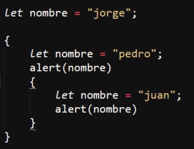
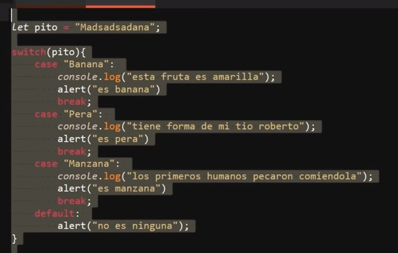

Se tratan de secciones de codigo en las que se crean ambitos de varibles independientes del resto del codigo, es decir, al utilizar las llavez en una sección del codigo, todos las varibles que se encuetren dentro de estas perteneseran a un alcanse local, por lo tanto solo podran ser utilizadas dentro de este bloque.
Por lo tanto este concepto es igual al del alcanse global o local de las varibles al usarse en otras estructuras de bloques como funciones, condicionales, objetos etc, para lo cual se mantiene la funcionalidad de los diferentes tipos de variable: const, var y let.

En otras palabras los bloques nos permiten crear apartados de varibles locales sinque se geneere un conflicto con las variables o datos externos.
Se trata de un ultimo tipo de sentencia de control de flujo, su función es semejante a la de "if" "else if" y "else", ya que esta tambien define el que codigo ejecutar segun las condiciones que se cumplan o incumplan.
Sin embargo la estructura de "Switch" es bastante diferente, ya que esta a diferencia de los otros condicionales los cuales por cada uno de sus usos definen un bloque de codigo a ejecutar, y el conjunto de estos genera una estructura de condiciones para diversos casos que se puedan presentar, "Switch" por cada uno de sus inplementaciones permite definir multiples bloques de codigos para los diversos casos.
Para esto la sintaxis de "Switch" esta compuesta por la declaracion de su palabra clave, (nombre) la cual recibe un dato el cual definira los casos de ejecución, tambien posee la palabra clave "case", la cual define cada uno de los casos de ejecución, para lo cual luego de este se define el valor del dato que desencadenara el bloque de codigo (condición), seguido de dos puntos (:), segudo del codigo a ejecutar.
Para cerrar cada uno de los casos se utiliza la palabra clave "break", la cual al igual que en las funciones detene la ejecución del "Switch" y evita que se ejecuten los otros casos, por ultimo se usa la palabra clave "default", la cual permite definir un caso que se ejecutara si ninguna de las otras condiciones es cumplida.

En este ejemplo el resultado en consola es "no es ninguna", ya que el valor de la varible "pito" no cumple con ninguna de las condiciones definidas.
Nota: Una caracteritica de "Switch" es que posee un rendimiento bastante inferior a una estructura condicional compuesta por "if", "else if" y "else", por lo que por lo general solo es usada para aplicar las condiciones de codigos complejos ya que este permite un codigo más legible, o al inplementar sentencias complejas bastante espesificas, para la gran mayoria de los casos casi simpre es más optimo usar los otros condicionales.